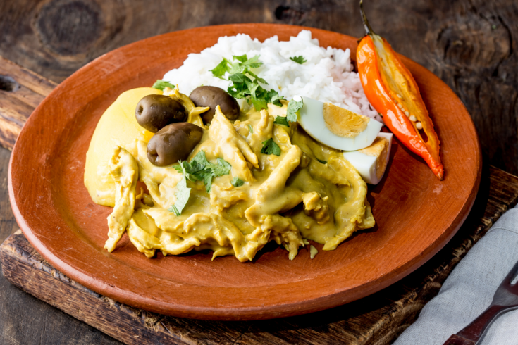

AJI DE GALLINA

INGREDIENTS
- 1 lb of chicken breast, boiled and shredded
- 2-3 slices of white bread, crust removed and
cut into small pieces
- 1 cup of evaporated milk
- 1/4 cup of vegetable oil
- 1-2 hot peppers (aji amarillo or jalapeno), seeded and diced
- 1 onion, chopped
- 2-3 cloves of garlic, minced
- 1 teaspoon of cumin
- Salt and pepper to taste
- 1/2 cup of grated parmesan cheese
- 2-3 hard-boiled eggs, sliced
- Cooked white rice
INSTRUCTIONS
- In a blender or food processor, puree the bread, evaporated milk, and hot peppers until smooth. Set aside.
- In a large skillet, heat the vegetable oil over medium heat.
- Add the onion and garlic and saute until the onion is translucent.
- Add the chicken and cumin and stir-fry for a few minutes until the chicken is lightly browned.
- Add the bread mixture to the skillet and stir well to combine with the chicken mixture.
- Add salt and pepper to taste.
- Simmer for 10-15 minutes, stirring occasionally, until the sauce has thickened.
- Stir in the grated parmesan cheese and continue cooking until the cheese is melted and the sauce is creamy.
- Serve the Aji de Gallina over cooked white rice and garnish with slices of hard-boiled eggs.
- Enjoy your delicious Aji de Gallina!